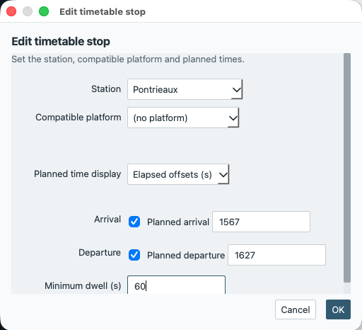
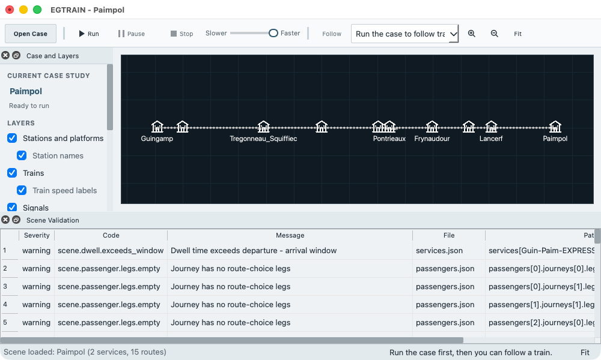
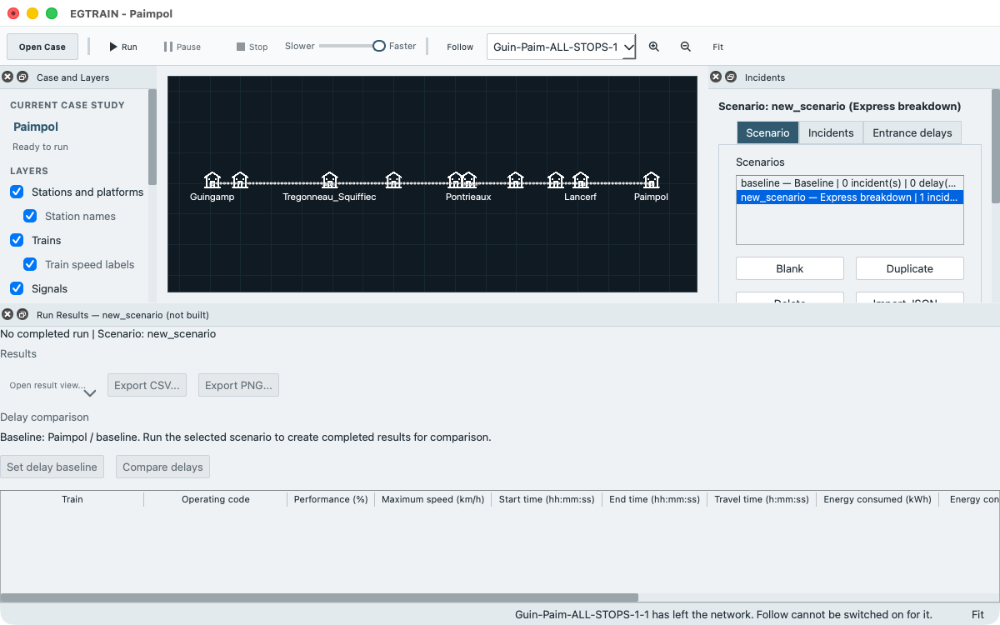

Tutorial: modify a supplied case¶
This tutorial changes a copy of the Paimpol case study and follows the change through validation, saving, reopening, a run and a comparison of delays. You learn how to edit a case without touching the supplied one, which edits clear results, and how to see that a saved edit is still there after you quit and start again.
You need EGTRAIN running with the case study Paimpol available, and you should have done Getting started once, so that opening a case, running it and reading the Run Results are familiar. The words case study, scenario and baseline are in the glossary. The steps take the Paimpol timetable as it is committed and use the labels of the current program.
Save the supplied case under a new name with File > Save Case Study As… before you change anything, and never save into the supplied case. The example cases of an installed copy are protected: File > Save Scene on one of them asks for a new bundle name instead of writing. A scene folder anywhere else is not protected, for example the Scenes folder of a source checkout, where Save Scene writes into the committed files.
1. Open Paimpol and save a working copy¶
Open Paimpol from Bundled cases in the Open a Case window (toolbar button Open Case), as in Getting started. The title bar reads
EGTRAIN - Paimpoland the dock Case and Layers shows “Ready to run”.Choose File > Save Case Study As…. The dialog Save Case Study As starts in your Documents folder when the case comes from the installation. Name the file
paimpol-practice.egsceneand save it. EGTRAIN adds.egscenewhen you leave it out.The window now holds the copy: File > Save Scene writes to
paimpol-practice.egscene, and File > Recent Scenes lists it. The scene inside still has the namePaimpol, so the title bar does not tell the copy from the original, and a run of the copy would write to the same output folder as a run of the original (Output folder).Give the copy its own name. Open the dock Case Settings (Editors > Case Settings), replace Name with
Paimpol practiceand press Enter. The title bar now readsEGTRAIN - Paimpol practice, with the platform’s mark for unsaved changes.Choose File > Save Scene. The mark goes and the status bar reads “Scene saved”.
If the dialog answers “Installed example scenes cannot be overwritten. Choose a location outside the EGTRAIN installation.”, choose another folder.
2. Run the copy once¶
Choose Run in the toolbar, check the dialog Run simulation, and choose its button Run simulation. When the status bar reads “Simulation complete”, the dock Run Results opens. Choose Open result view… > Timetable and find the rows of Guin-Paim-EXPRESS-1-1. Note the columns Arrival delay and Departure delay.
The numbers in this tutorial were not read from the window. They come from runs without a window, made as in Check the copy outside the window with -g 0, and read from the simulated times in TrainTrajectories/TimetablePoints.txt in the output folder of the run and the planned times in services.json. The delay is the simulated time minus the planned time. For the unchanged case the run gave:
Station |
Arrival delay |
Departure delay |
|---|---|---|
Pontrieaux |
+13 s |
+13 s |
Paimpol |
23 s early |
none planned |
Close the timetable window. The window should show the same values.
3. Change a dwell and a performance¶
Both edits are to the service Guin-Paim-EXPRESS-1, the train that runs from Guingamp to Paimpol and stops at Pontrieaux on the way.
Open the dock Services (Editors > Services) and choose
Guin-Paim-EXPRESS-1in the list. The dock has the tabs Service, Timetable and Run occurrences.Open the tab Timetable and click the row Pontrieaux in the table of stops. The dialog Edit timetable stop opens.

Try Cancel first: change Minimum dwell (s) from 60 to 999 and choose Cancel. The row still shows 60 and the title bar shows no mark for unsaved changes.
Click the row again, enter
180in Minimum dwell (s) and choose OK. OK applies all fields of the dialog together. The row shows 180 and the title bar shows the mark.Open the tab Service, set Running performance (parameter) % to
80and press Enter. The field accepts 1 to 100; 100 is the committed value.
A dwell longer than the window between the planned arrival and departure is allowed but is reported, as the next step shows.
4. Validate¶
Choose View > Scene Validation (Ctrl+Shift+V). The columns are Severity, Code, Message, File, Path and Suggested Fix. Paimpol opens with no errors and 371 warnings: 369 passenger journeys without route-choice legs and 2 final blocks that are clipped. scene_tool validate --runnable counts them in the same way. Your edit adds one warning:
Code
scene.dwell.exceeds_window, message “Dwell time exceeds departure - arrival window”, pathservices[Guin-Paim-EXPRESS-1].stops[1].dwell_seconds.

A warning does not block a run. An error does: Run is disabled and the dock Case and Layers shows the first error instead of “Ready to run”. Edit > Undo takes an edit back. Normal mode hides the warning counts in the status bar; View > Advanced / Developer details shows them.
5. Save, reopen from Recent Scenes, and check the original¶
Choose File > Save Scene. This writes
paimpol-practice.egscene.Open the original: choose Open Case in the toolbar, then Paimpol under Bundled cases. Open the dock Services again and choose
Guin-Paim-EXPRESS-1in the list. On the tab Service, Running performance (parameter) % is 100. On the tab Timetable, the row Pontrieaux has dwell 60. The original is as it was.Choose File > Recent Scenes > paimpol-practice, then
Guin-Paim-EXPRESS-1in the list of Services. The row Pontrieaux has dwell 180 and the performance is 80. The title bar readsEGTRAIN - Paimpol practice.
The supplied case is a scene folder, not a file. In a source checkout, this prints nothing:
git status --short EGTRAIN/QEGTRAIN/Scenes/Paimpol
In an installed copy, copy the folder before step 1 and compare it with the installed folder afterwards. On macOS the installed folder is /Applications/QEGTRAIN.app/Contents/Resources/Scenes/Paimpol:
cp -R /Applications/QEGTRAIN.app/Contents/Resources/Scenes/Paimpol ~/Paimpol.before
diff -r ~/Paimpol.before /Applications/QEGTRAIN.app/Contents/Resources/Scenes/Paimpol
diff prints nothing when the folders are the same.
6. Run the edited copy¶
Choose Run and Run simulation again. The dock Run Results now shows a Performance (%) of 80.0 for the express and 100.0 for the other train. In Open result view… > Timetable, Guin-Paim-EXPRESS-1-1 is later than in step 2. The run without a window gave:
Station |
Arrival delay |
Departure delay |
|---|---|---|
Pontrieaux |
+61 s |
+181 s |
Paimpol |
+167 s |
none planned |
The other train, Guin-Paim-ALL-STOPS-1-1, has the same times as before.
7. Add an incident scenario and compare delays¶
A comparison needs two runs of the same case: a baseline without incidents or entrance delays, and a scenario that has them. The order matters because every edit clears the baseline (the table below). Make the scenario first, then run both.
Open the dock Incidents (Editors > Incidents). The list Scenarios has one row, for the scenario
baseline(named Baseline), with 0 incident(s), 0 delay(s) and the markerdefault. With it selected, choose Duplicate (Blank makes an empty scenario instead). The new scenariobaseline_copyis selected. Replace Name withExpress breakdown.Open the tab Incidents of the dock and choose Add Incident. Set Type to
train_breakdownand Target toGuin-Paim-EXPRESS-1-1 | route route6 | entry +10 s. Enter900in Start (s). Leave Use recovery end (s) ticked and enter1200in the field below it, leave Reduced speed cap unticked, and press Enter after each number. The train stops at 900 s and recovers at 1200 s.Choose File > Save Scene. The list marks the scenario
modifieduntil you save. Saving does not clear results or the baseline.Choose
baselinein the list. Choosing a scenario is not an edit. Choose Run and check that the dialog Run simulation says Active incidents 0 and the scenariobaseline. After “Simulation complete”, choose Set delay baseline in the dock Run Results. The line next to it names the baseline.Choose
baseline_copyin the list. The results are cleared and the baseline stays. Choose Run; the dialog now says Active incidents 1. After “Simulation complete”, choose Compare delays.The window Delay analysis opens on the tab Against baseline.
Guin-Paim-EXPRESS-1has a positive additional delay at Paimpol. The run without a window, withbaseline_copyas the default scenario, gave 343 s: the arrival at Paimpol moves from 2866 s to 3209 s.Guin-Paim-ALL-STOPS-1is Same. How to read the window, and what it does not claim, is in How delays are calculated.
After any edit, Compare delays is disabled and the line above the buttons in Run Results reads “Delay baseline cleared after a case edit. Complete a run with no incidents or entrance delays to set a new baseline.” until a run completes. Repeat step 4 and step 5. If the tab Against baseline lists reasons instead of a difference, the two runs do not match in another way. For example, the selection on the tab Run occurrences of Services differs between the runs, and the tab says that an occurrence is in one run only. Keep every occurrence selected, because the two runs must hold the same trains.
What clears results and the baseline¶
Results are the Run Results table, the result windows opened from it and the replay. The baseline is the run frozen by Set delay baseline. Both live in memory only.
Action |
Results and replay |
Delay baseline |
|---|---|---|
Any edit in an editor dock, including a scenario or incident edit, and Edit > Undo or Redo |
Cleared |
Cleared |
Choosing another scenario in the dock Incidents |
Cleared |
Kept |
Starting a run |
Replaced by the new run |
Kept |
A run that you stop |
None kept |
Kept |
File > Save Scene, Save Case Study As…, Save Scene As Folder… |
Kept |
Kept |
Opening a case (also from Recent Scenes), New Case Study…, Load Legacy Case…, recovering unsaved work |
Cleared |
Cleared |
Opening a result window, Export CSV…, Compare delays |
Kept |
Kept |
Quitting EGTRAIN |
Lost |
Lost |
8. Quit, relaunch and confirm that the edits persisted¶
Choose File > Quit (on macOS, the Quit entry of the application menu). If the title bar still shows the mark for unsaved changes, EGTRAIN asks about them (the box is titled Unsaved Scene on Windows and Linux, and is a sheet without a title on macOS); choose Save.
Start EGTRAIN again. In Open a Case, choose
paimpol-practiceunder Recent cases and Open. File > Recent Scenes does the same from the window.In Services,
Guin-Paim-EXPRESS-1has dwell 180 at Pontrieaux and performance 80. In Incidents, the list holdsbaselineandbaseline_copywith one incident. The scenario that is selected after opening is the default,baseline.The Run Results are empty and Compare delays is disabled: results and the baseline were not saved. Run both scenarios again to compare.
Check the copy outside the window¶
The saved bundle is an ordinary case study (command-line tools). The programs are not on the search path. Use their full paths. In the macOS app they are /Applications/QEGTRAIN.app/Contents/MacOS/scene_tool and /Applications/QEGTRAIN.app/Contents/MacOS/QEGTRAIN. In the Windows installation or the unzipped portable folder they are scene_tool.exe and QEGTRAIN.exe next to each other. In a build from source, run from EGTRAIN/QEGTRAIN and use ../../build/scene_tool and ../../build/QEGTRAIN.app/Contents/MacOS/QEGTRAIN (on Linux ../../build/QEGTRAIN), as in Run a local build. With the macOS app and the bundle in the current folder:
APP=/Applications/QEGTRAIN.app/Contents/MacOS
"$APP/scene_tool" validate --runnable paimpol-practice.egscene
"$APP/QEGTRAIN" --scene paimpol-practice.egscene -g 0
The first command prints the diagnostics and exits with 0 when there is no error. The second runs the default scenario, baseline, without a window, and writes the run output to the folder named Paimpol practice. To run the scenario baseline_copy this way, make it the default scenario in scenarios.json of a folder saved with Save Scene As Folder…, as in the next section.
Limits and the JSON route¶
The editors are tables, lists and dialogs. You cannot place an incident by clicking the canvas. The incident target is a choice in a list.
This tutorial changes one value at a time. For many changes at once, save the case with File > Save Scene As Folder… and edit the JSON files, then validate with
scene_tool validate. The keys are in V1 scene properties and the schema reference.The same two edits in
services.jsonare"performance_percent": 80on the service and"dwell_seconds": 180on its second stop.The same scenario is the object below in the list
scenariosofscenarios.json. It has the incident id that the editor proposes (new_incident) and the scenario id that Duplicate proposes. The keydefault_scenario_idin that file names the scenario that a run without a window uses; set it tobaseline_copyfor that run.
{
"id": "baseline_copy",
"name": "Express breakdown",
"incidents": [
{
"id": "new_incident",
"type": "train_breakdown",
"target": "Guin-Paim-EXPRESS-1",
"occurrence": 1,
"start_seconds": 900,
"end_seconds": 1200
}
],
"entrance_delays": []
}
Import JSON… and Export JSON… in the dock Incidents exchange one scenario object like this one (scenes and application).
The times in this tutorial are elapsed seconds from the base time of the case, which is 07:10:40 in Paimpol.
If something does not work¶
Run is disabled: the dock Case and Layers names the first error. Fix it in the dock Scene Validation or take the last edit back with Edit > Undo.
Compare delays is disabled: the tooltip says what is missing. Set the baseline from a run with no incidents and no entrance delays, then run a scenario that has them, without editing in between. After an edit, run both again.
The numbers differ from the tables: check that the dwell is 180, the performance is 80, and that you ran the scenarios named in the steps.
For the other tasks see How-to recipes, and to build a case from nothing see Tutorial: the smallest useful scene.